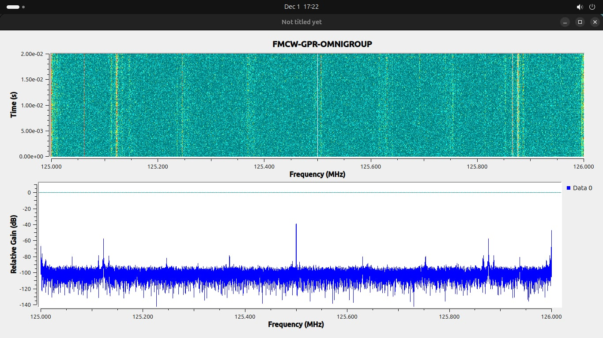

Accuracy Performance
Measurement Error Rates
Mean Error at 29 cm
1.433%
Mean Error at 72 cm
0.863%
Conclusion: The results confirm strong agreement between FMCW-GPR measurements and physical reference data.
🎯
High Precision
Reliable detection of metallic targets at variable depths with minimal deviation from actual values.
Radargram Visualization
Processed data are displayed as waterfall and heatmap-style radargrams, enabling intuitive interpretation of subsurface features. These visual outputs clearly indicate object presence, depth variation, and lateral continuity during scanning.

FIG 1.0: Processed Heatmap Visualization
Visual Interpretation
- High intensity reflection indicates object presence
- Y-Axis correlates directly to depth
- X-Axis represents lateral scan position